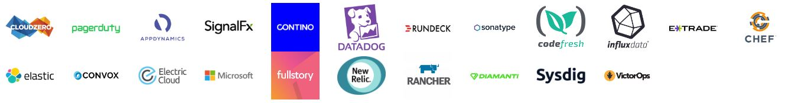

Two Days, Three Tracks, One Community.
When:
April 9-10, 2019
Where:
The Georgia Aquarium
Atlanta, GA
Serverless Days, Devops Days & Map Camp Agenda
Tickets still available!
The first Atlanta Serverless days will be a joint conference with the Atlanta Devops and Map Camp
groups. This combined conference will provide two days of diverse topics at the fantastic Georgia
Aquarium. This synergy allows more time for sharing ideas, methodologies and stories about Serverless,
DevOps and Wardley mapping. Sponsorship information can be found at Sponsor Info
and ticket information will be announced soon. Please follow us on Twitter for updates.
If you have any additional questions, please email us at atlanta@serverlessdays.io.
Check again soon for more information!
Our awesome sponsors for the combined Devops Days, Map Camp & Serverless Days
Platinum Sponsor
Gold Sponsors

Silver Sponsor